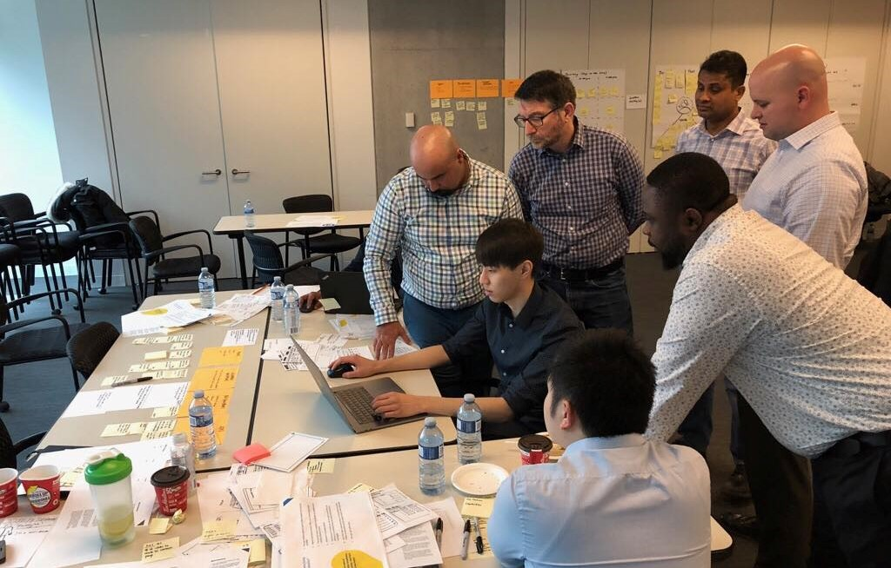

Tools: Sketch, InVision, Photoshop, Illustrator, HTML, CSS

Xperience First, Winter 2018
My Role
During my internship at RBC, I was part of Xperience First, the newly formed design center of excellence within RBC Wealth Management. The team included four UI/UX designers, one design strategist, and one design lead. Our goal was to facilitate the adoption of human-centered design into WMTS (Wealth Managament Technology & Solutions).
Due to an NDA, I can't display RBC projects on my portfolio. If you would like to know more about my time at RBC, please reach out to me by email at christopher.m.ho@gmail.com.
Re-imagining Wire Transfers
A major project our team worked on was the redesign of an internal wire transfer application. We were responsible for improving the user experience, interface, and overall process when using said application, as well as ensuring user adoption.
Before we could begin redesigning the application, we needed to fully understand what it was used for, how it was used, and its current problems. We conducted ten interviews with end-users, learning about each and every one of their touch points and general pain points. Five personas and user journey maps were formed from the collected data, which were used to establish empathy with the end-users, allowing us to truly understand the problem space. Additional data was gathered from talking with subject matter experts and application specialists.
In summary, we discovered that the current payments process was highly manual, as it involved several manual touch points for each and every transaction, where multiple quality checks and reworks were required to migitate risks. To keep ourselves on track to solve this problem, we formed a HMW statement and several benchmarks for the future state regarding risk reduction, efficiency, and the overall experience. These benchmarks were formed from end-users' expectations of future features (ex. simplified screens, improved UI navigation, single sign-on, etc.).
Now with a much stronger understanding of the problem and current application, we began the redesign. Over the course of a two-day workshop with end-users and stakeholders, we rapidly designed mockups and put together a high-fidelity prototype.

The two-day workshop with end-users and stakeholders
The prototype was tested with six end-users who provided feedback accordingly. Without going into application specific details, some of the top insights uncovered from the usability testing sessions inlcuded:- Auto-populated fields were highly valuable to save time, reduce cognitive load, and check for accurate information
- Users desired a way to keep records on file, easily retrieve order details, and easily share details with relevant stakeholders
- Labeling needed to be more specific and provide more context
Using this information and considering stakeholder opinions of the prototype, we made several design changes to the prototype. After iterating, we now had a minimum viable product which was tested once again, this time with eight end-users. The results, observations, and top findings from the usability testing sessions were consolidated into a report and presented to the stakeholders. Once the project was approved, it was handed off for development.
Design Workshops & Conferences
Besides redesigning digital applications and processes, our team also facilitated design thinking workshops & conferences for RBC employees. The purpose of these events was to teach different teams on how to utilize design thinking in their own day-to-day jobs. Designers aren't the only ones who can utilize design methods and we wanted to emphasize that within RBC.
During these workshops & conferences, we would present a real business problem to several cross-disciplinary teams and ask them to come up with a solution. We would then guide them through a condensed design sprint to get them started. The teams would spend a day experimenting with empathy mapping, user ecosystem mapping, client journey mapping, forming HMW statements, and ideating. Near the end of the day, each team would sketch out their solution. The following day, I would take their sketches and rapidly design mockups and a digital prototype.

Me working with a team on their solution design
Following this, an end-user would test each of the teams' solution and provide feedback. Changes would be made based on the feedback and each team would present their final solution to the workshop & conference sponsors/stakeholders.
By the end of the workshop/conference, each attendee would leave with new problem solving skills that they could apply to their jobs and everyday life.
Promoting Xperience First
Established in December 2017, Xperience First was relatively unknown within RBC when I began my internship. In order to raise awareness about our team and the services we provided, I iteratively designed and developed Xperience First's intranet website, available for all RBC employees to access through RBC's internal social platform.
It began with simple paper and pen wireframes, then moved to HTML and CSS prototypes. After discussing possible improvements on the design with the team, I made some changes and developed a final website. Conception to completion of the website was three weeks.